This manual walks through Crew one task at a time: first the worker and the foreman (on the phone), then the office (on the computer). Screen names, buttons and messages are written exactly as they appear in KORbuild, in bold.
Before you start
Crew opens in the area of your role: a worker goes straight to My time clock (no modules screen); a foreman opens on the Crew time clock; the office opens on Now. If you do not see a screen described here, your role does not include it — see Roles and permissions.
Worker: clock in and out on your own phone
What it is for: recording your own day, with the time and the location of each punch.
Who can do it
Anyone with Clock in and out (self) (default role: Worker).
- Open KORbuild. My time clock opens directly, with the Official clock time, today's status (for example, Not clocked in yet) and one big button with what fits now.
- Tap Clock in. A window opens:
- Job — where you are working (only jobs in progress are listed).
- The distance to the job, in green when you are inside the geofence ✓, or in red when you are outside it.
- Cost code — the service you are working on.
- Crew photo (optional) — opens the camera.
- Note (optional) — for example, material was late; left early with the foreman's OK.
- Confirm. Your punch is recorded with the time, the GPS position and its accuracy.
- During the day, the same button changes to what fits: start the break, come back from the break, switch job, clock out.

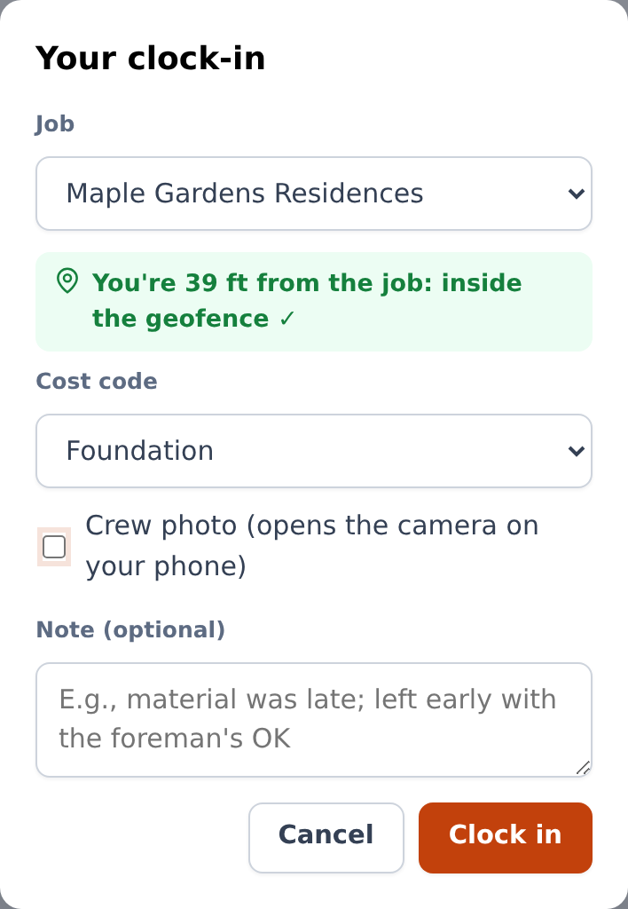
Below the button, Today lists your punches and My week shows your hours per day and the total. A worker never sees dollar amounts.
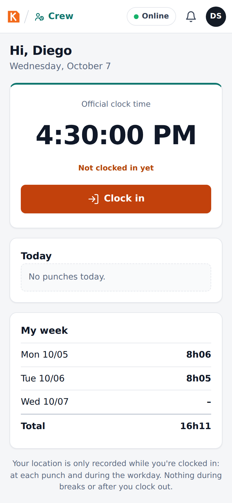
Your location
Your location is only recorded while you are clocked in: at each punch and during the workday. Nothing is recorded during breaks or after you clock out. The screen says so at the bottom.
Foreman: clock in the whole crew
What it is for: one phone clocks in the whole crew at once — the most common way crews work on site.
Who can do it
Anyone with Clock in the crew (default role: Foreman).
- Open Crew. The Crew time clock shows the Official clock time, how many are working, on break, traveling and off site, and the list of the crew with each person's status.
- Select people: tap each one, or Select all. The bar at the bottom says how many are selected and turns on the buttons that make sense for them (for example, Clock in (6)).
- Tap Clock in. KORbuild locates the phone and shows the distance to the job ("inside the geofence ✓" or "outside the geofence"). Choose the cost code, take a crew photo if you want, add a note, and confirm.
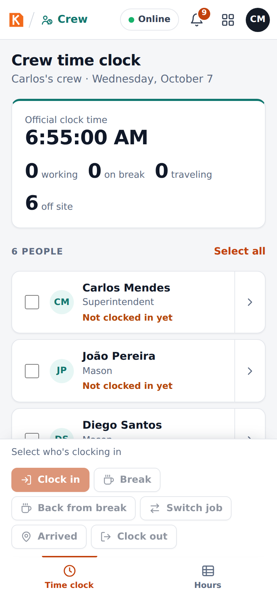
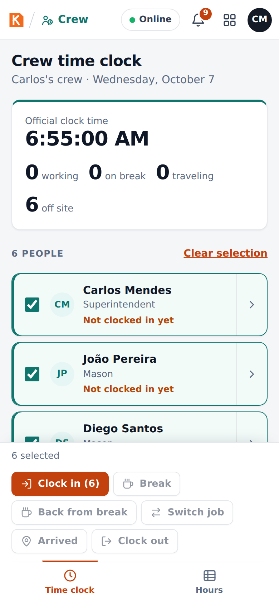
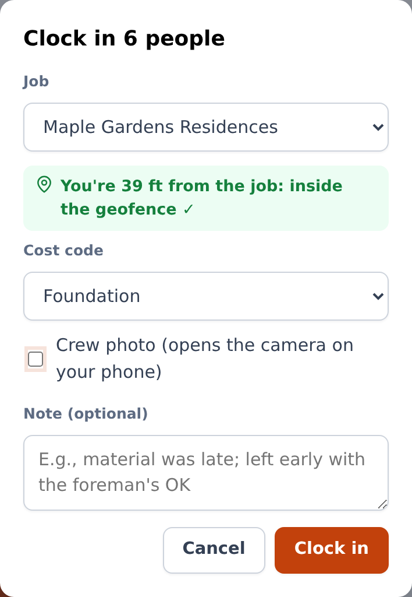
Each person receives their own punch, which records who registered it (the foreman). With nobody selected, the buttons stay off.
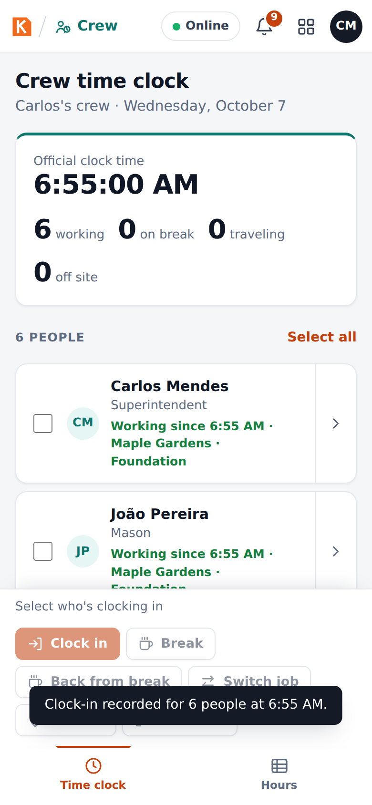
Breaks and clock-out
- Break and Back from break cover the meal break (one tap, no window).
- Clock out ends the day. KORbuild asks Clock out now? — if someone keeps working, leave them out of the selection.
Switch job
- Select the people and tap Switch job.
- Choose Which job? and tap Leave for the job. The punch is made where you are (the job you are leaving), and the travel starts. Travel time to the other job counts as hours worked.
- When you get there, tap Arrived, choose the cost code on this job and Record arrival. The arrival is checked against the geofence of the new job.
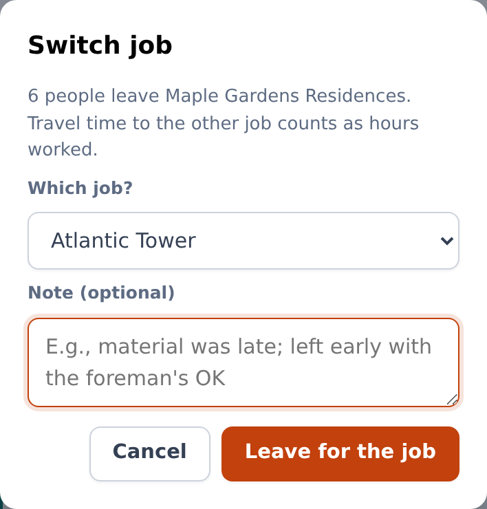
Foreman: check the crew's hours
Hours shows the crew's week: hours per person and per day. A red ! means something to check — a missing clock-out, an off-site punch or a missed break. The office approves the hours.
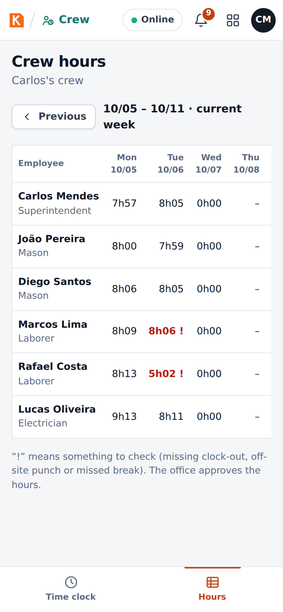
Office: see who is working now
Who can do it
Anyone with View time clock and timesheets (default roles: Admin and Project manager).
Now shows:
- Working now, On break, Traveling and Hours today.
- Off-site punches to review: punches outside the geofence, with the distance from the job. View day opens the person's day map; Reviewed marks it as checked (the punch stays recorded as outside the geofence).
- Each job with the people clocked in on it, since when and on which cost code.

Office: approve the week (timesheets)
Who can do it
Anyone with Approve and edit timesheets (default roles: Admin and Project manager).
- Open Timesheets. Use Previous and Next to change the week (Monday to Sunday).
- At the top: Hours this week, Overtime hours, Labor cost (with the cost permission) and Awaiting approval.
- The table has one row per person: hours per day, Total, OT (overtime), Cost and Status (Approved, Awaiting approval…).
- Check the people to approve and click Approve selected, or open a person and click Approve week.
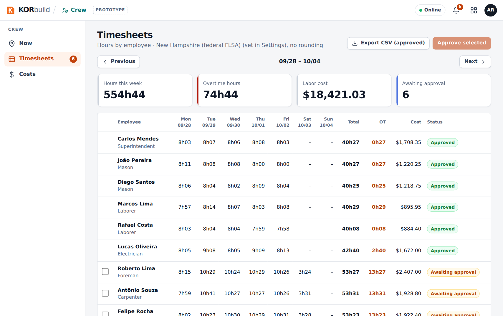
A week cannot be approved while someone has a missing clock-out: KORbuild lists who needs to be fixed first. Approved hours are released for payroll.
Open one person's week
Click a person to see their Employee week: total, regular, overtime and cost, and each day with its segments (work on a job and cost code, break, travel), the Day map and Edit.
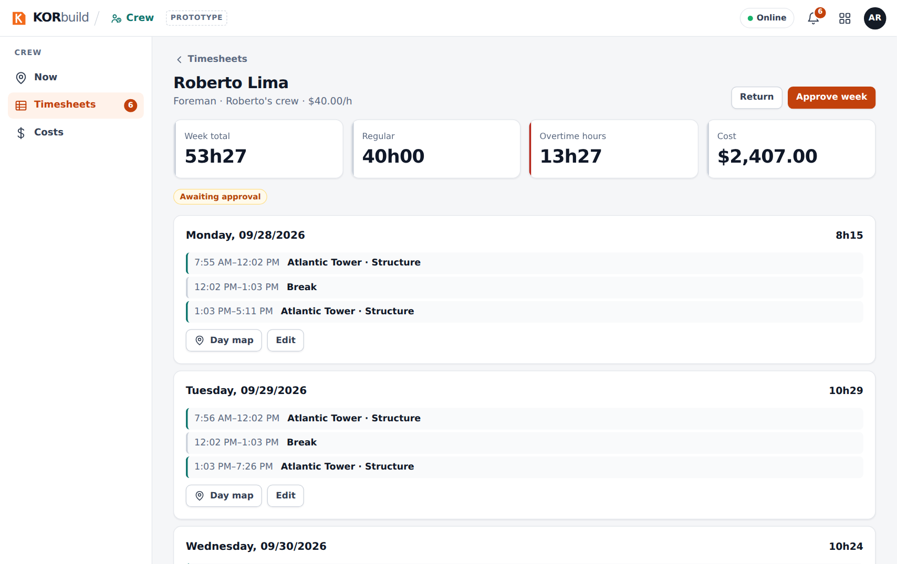
Return a week
Return sends the week back to the foreman. Write What needs to be reviewed? (for example, confirm Tuesday's clock-out with the foreman) and click Return.
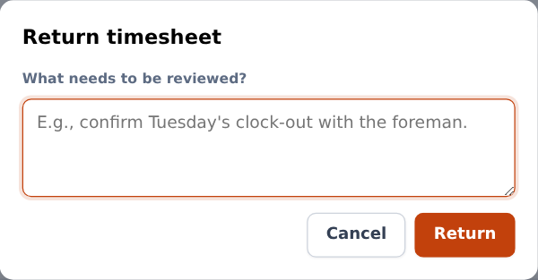
Edit a day (for example, a forgotten clock-out)
- On the person's week, click Edit on the day.
- Choose the Punch (clock out, break start, break end, clock in), the Time and the Reason (for example, forgot to clock out; confirmed with the foreman).
- Click Save edit.
The edit is added as a new punch, marked as an edit, with your name and the reason. The original punches stay visible.
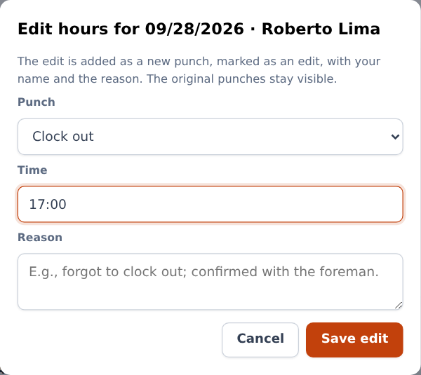
Export to payroll
Export CSV (approved) downloads the approved hours of the week, one line per segment (week, employee, trade, date, job, cost code, type, start, end, hours, status), ready for payroll systems such as QuickBooks, Gusto or ADP.
Office: see a person's day on the map
Day map (from Now › View day, or from a person's week) shows the day on a street map:
- Clock in (green E) and Clock out (dark S), the number of entries and the distance traveled;
- the jobs, numbered in the order visited, with the geofence;
- the location points recorded during the workday, connected with arrows in the direction of travel;
- off-site punches in red;
- Play back replays the day, with the clock on screen; Full screen enlarges the map.
Below the map: the route of the day (job → travel → job, with distance and minutes), the list of location entries (tap one to see it on the map) and the timeline of punches, with geofence, accuracy, who registered it, photo and edits.
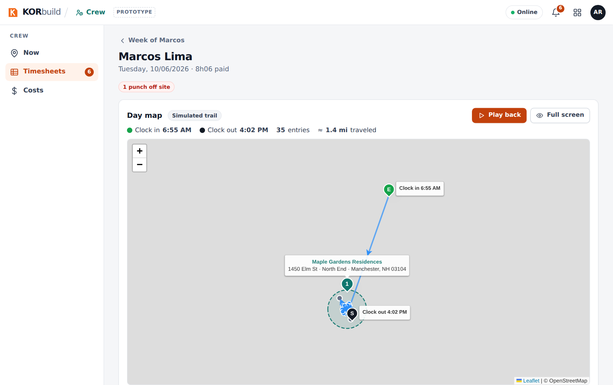
In the prototype
The trail between punches is simulated from the punches (the map shows Simulated trail). In the product, it comes from the phone's GPS during the workday, which requires the store app. Street maps, routes and addresses use free public services in the prototype; without internet, the map becomes a simple drawing.
Office: follow labor cost by job
Who can do it
Anyone with See costs and dollar amounts (default roles: Admin and Project manager).
Costs › Jobs shows, for all jobs, Labor budget, Actual to date, Estimate at completion and Projected overrun, and for each job:
- the status: On track, Watch or Projected overrun;
- Budget, Actual (% of budget), Estimate at completion and the overrun or savings;
- bars for Schedule elapsed, Budget used and Percent complete;
- the chart of Actual (cumulative), Planned and Forecast to the end of the job;
- tables by cost code and week by week.
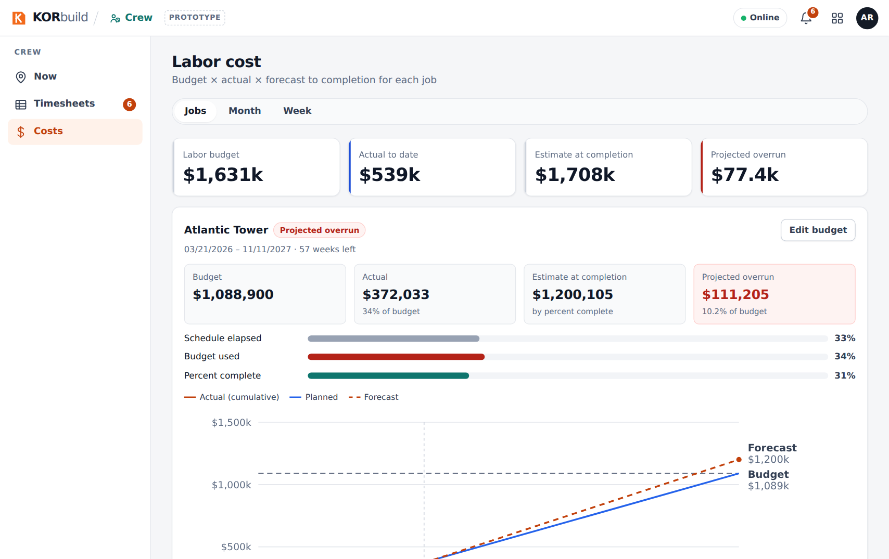
Edit budget sets the Total labor budget ($) and the Job percent complete (%). The forecast and the status are recalculated immediately.
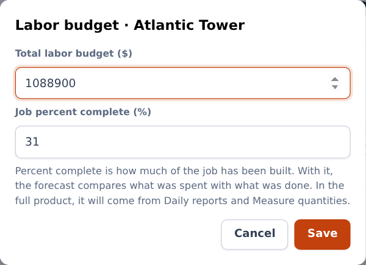
Month and Week show the cost of the period by job and cost code, split into wages, overtime premium and labor burden — for closing and checking.
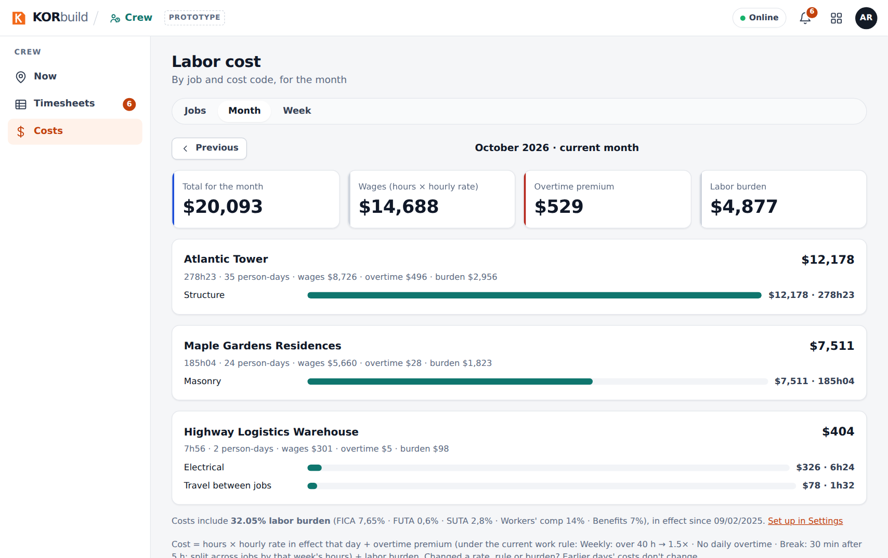
How the forecast works
With a percent complete, forecast = actual ÷ percent complete (spent 34% and built 31% means about 10% over budget). Without it, KORbuild uses the pace of the last 4 complete weeks through the end date.
Notifications
| When | Who | Message |
|---|---|---|
| Last week has timesheets not approved | Office | N last week's timesheets awaiting approval |
| An off-site punch in the last 48 hours, not reviewed | Office | Name: clock in off site |
| Someone in the crew had no clock-out yesterday | Foreman | Name has no clock-out from yesterday: let the office know |
| 8 AM on a workday and nobody in the crew clocked in | Foreman | Your crew hasn't clocked in today |
Messages and alerts
| Message | Where | What to do |
|---|---|---|
| inside the geofence ✓ / outside the geofence | Clock-in window | Outside is accepted: the punch is flagged for the office. |
| ! next to the hours | Hours, Timesheets | Something to check: missing clock-out, off-site punch or missed break. |
| Before approving, fix the missing clock-outs for: … | Approving | Open the person's week and Edit the day. |
| Clock out now? | Clock out | Leave out anyone still working. |
| Punch reviewed. It stays recorded as outside the geofence. | Now | Nothing: it was marked as checked. |
| Can't start inside a week that's already approved (it went to payroll). | Changing an hourly rate (Settings) | Choose a date from the next open week. |